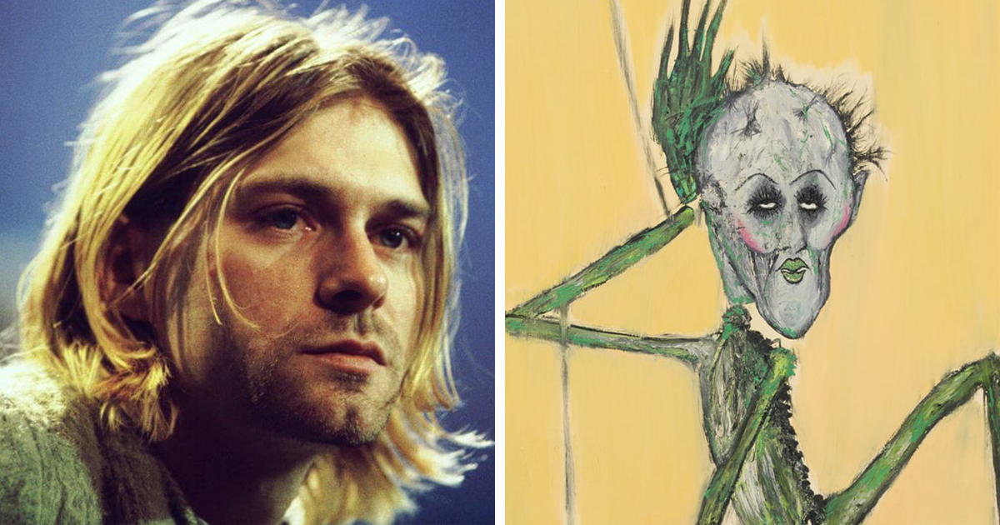

Janitor
Kurt Cobain's first job was as a janitor. Before becoming a successful musician, Cobain worked as a janitor at his high school.He was diagnosed with scoliosis as a teenager. This condition caused a curvature in his spine and gave him chronic back pain throughout his life.
Artist
Cobain was an avid artist. He drew and painted, and even created album art for some of Nirvana's releases. He was a big fan of The Beatles. In fact, he had a collection of Beatles records and even wrote in his journal that he wished he could have been a member of the band.
Mother
Cobain had a close relationship with his mother. He would often write her letters and even dedicated the song "Lithium" to her. He was a vegetarian. Cobain became a vegetarian in his teenage years and remained so for the rest of his life.
Polly
Cobain had a fascination with serial killers. He had a collection of books on the subject and even wrote a song about one, "Polly." He struggled with addiction and mental health issues. Cobain was open about his struggles with heroin addiction and depression, which ultimately led to his death by suicide in 1994.
Something in the way

The song was inspired by Kurt Cobain's experience of being homeless. In the early 1990s, Cobain found himself living under a bridge in Seattle, which inspired him to write the song. The lyrics of the song were written in a journal. Cobain wrote the lyrics to "Something in the Way" in a journal while living under the bridge. The song was initially recorded during the Nevermind sessions, but the band was unhappy with the results. The band ended up re-recording the song during a later session with producer Steve Albini. The cello part on the song was played by Seattle musician Kirk Canning. Canning's contribution to the song added a haunting quality to the track. The song was not released as a single, but it became a fan favorite and a staple of the band's live shows.